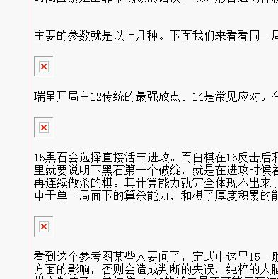

软件思维与人脑思维区别
#1 软件思维与人脑思维区别 作者：猪七戒 发表时间：2011-5-20 12:19:41

在写这篇文章前先把需要使用的软件介绍下。Blackstone大名鼎鼎的黑石
这次采用的是3.7的版本，据某些网络棋手介绍，这个版本复算4次，而其他的黑石版本复算3次。也就是说这个版本的黑石BUG相对较少，而且由于其体积非常小，是连珠软件中最适合随身携带的版本。现在把几个主要软件参数给大家介绍下。在界面截图的右侧。Nodes后的数值代表者当前局面下软件思考的总步数。看着非常巨大恐怖，其实大部分都是在计算无用点。这也是黑石的弱点之一，而在人脑中某些局面是根本不需要计算，这样人脑可以计算的更有针对性。
N/sec是当前局面下软件每秒思考的步数。一般这个步数是和CPU的主频成比例的。比如本人现在使用的电脑是主频3G的CPU。那么运算速度一般是28000步/秒。如果这个数值突然放大很多，那么恭喜你，你的黑石已经崩溃了。引发这种情况的原因很多，比如当前局面下无效的冲四活三过多，或者双方牵制过多，或者软件运行时间过长都可以产生。当产生这样的情况时，考验你自身的棋力的时候就到了。有很多人认为内存对黑石的速度有很大的关系。其实这里告诉大家，关系非常小甚至没有。内存对黑石的影响主要在计算大量步数后的存储上。这点由于人软合一的纯在已经被忽略到很小的地步了。
Value是黑石最关键的参数。是黑石对局面的判断最直观的地方。当这个数值是+的时候就表示当前局面黑石计算的一方处于优势。数值是-的时候自然就是处于劣势了。当前测试版本的黑石需要在VIEW中把SHOW ANALYSIS选上这个数值才会显示出来。在目前的软件棋手中。对这个数值的使用方法常见有两种。一种是只看数值而不对局面自我进行分析。利用手的速度来不断更改选点，让软件计算数值。并且向后延伸，直到找到最佳选点。这样的软件操作手中拥有大量顶尖软件棋手，在他们眼中数值是最重要的。另外一种是加入自己的思考的。我本人也是第二种，当我使用黑石时也喜欢加入大量个人思考，软件对我来说只是辅助，作用是缩短思考时间。但是就算这样在软件比赛中我依然经常因为时间因素导致失败。这样就造成了我这种类型使用软件的有个最大的特点。要么走出非常精彩的取胜棋局。要么因为时间因素走出非常低级的错误。很难形容这两种软件棋手哪种更有优势。因为这里还涉及到开局研究方面的因素。
主要的参数就是以上几种。下面我们来看看同一局面下软件思维和人脑思维的区别在哪里。

瑞星开局白12传统的最强放点。14是常见应对。在这里如果让黑石计算15选点的话。黑石将轻易走出黑必败的局面。如下图：

15黑石会选择直接活三进攻。而白棋在16反击后利用18借出和左边的联系。之后白20简单白必胜。那么这个局面难道黑石强大的局部计算能力算不出白棋的VCT吗？这里就要说明下黑石第一个破绽，就是在进攻时候着重计算自身子力厚度大的地方。第二个破绽就是对计算直接VCT比较容易。而计算这种需要借用某些棋子（比如18）再连续做杀的棋。其计算能力就完全体现不出来了。毕竟软件的设计要更符合逻辑化，而这种左右借用全盘调动的情况在软件设计中很难体现出来。软件的设计更片中于单一局面下的算杀能力，和棋子厚度积累的能力。那么在14后人脑是怎么思维的呢。如下图：

看到这个参考图某些人要问了，定式中这里15一般是直接走在I12活三的，之后才会走在H7分断白棋。这里只是分析纯粹的人脑在当前局面会走在哪里，而不参考定式方面的影响，否则会造成判断的失误。纯粹的人脑在看到这个局面时候第一反应都是走在这个15点上。因为人脑会先分析自身是否可以取胜。很明显11-13的活二被白棋牵制住了。单纯依*9-13的活二是不可能展开进攻的。那么H7的15既能继续在右边形成VCT。又可以分断白棋左右两边的连接。那么自然是人脑最佳的选择了。这里可以看出人脑在分析局面的时候更喜欢整体思考。而不是简单的在自身棋子厚度大的地方计算叠加效果。通俗点说人脑首先思考的是大局观，而软件首先思考的是局部优势。
上面的例子分析出了人脑在大局观上相对软件的优势。这是软件设计不可能避免的地方。也是人类在目前阶段面对计算机最大的优势。下面再通过一个例子来说明软件优越于人脑的地方。如下图：

疏星二打中古老的11变化，为什么说是古老的11呢。因为在近些年中该变化已经被证明白棋必胜了。图中12的下发是原来公认的最强走法，因为他很符合连珠中盘纠缠的对称性。也是典型人脑思维模式。在不确定能否必胜的情况下选择破坏对手的进攻形状。但
#2 Re:软件思维与人脑思维区别 作者：小红眼镜 发表时间：2011-5-20 12:24:00
 咱能发帖子的时候在本站先搜索一下是否别人已经发过了么。。。。
咱能发帖子的时候在本站先搜索一下是否别人已经发过了么。。。。
再另外。。。您能图不要又挂了么。。。
再再另外。。您能发别人的帖子的时候顺便把原作者写上么。。。囧
首发的网址应该是这个。。可惜后来因为网站的原因内容丢失了
下边这个是后来重新有人发帖的。。。
［此帖子已被 小红眼镜 在 2011-5-20 12:49:48 编辑过］
#3 Re:软件思维与人脑思维区别 作者：猪七戒 发表时间：2011-5-20 12:27:31
只要看着有用就发上来，发着帖子的愿作者还真不知道叫什么
#4 Re:软件思维与人脑思维区别 作者：猪七戒 发表时间：2011-5-20 12:29:29
下次找到再补上，抱着学习的目的才是主要的 对不
［ 小红眼镜 于 2011-5-20 12:46:14 时花20金币送鲜花一朵］
#5 Re:软件思维与人脑思维区别 作者：小红眼镜 发表时间：2011-5-20 12:46:01
你没发现我上边列举的三个疑问里面。。。原作者这个是我排在最后的一个么。。。囧 另外。你看我发的帖子里面的那个连接了么。。。
第一问。。是为了减轻网站的负担，你觉得这个文章好。可以先搜索一下。看到站内有的话。可以直接顶原帖就行了。
第二问。。。是让你发文章的时候。。好歹也把图给重新上传一下。。外链的图片很多都无法显示的。。
咳咳。发帖分享时很好滴~~送上鲜花一朵。。
［此帖子已被 小红眼镜 在 2011-5-20 12:47:02 编辑过］
［ 吉小鼠 于 2011-5-20 13:39:49 时花20金币送鲜花一朵］
#6 Re:软件思维与人脑思维区别 作者：聚贤联盟特使 发表时间：2011-5-20 13:26:16
谢谢猪七戒的分享，同时谢谢三吧的建议。。木法送鲜花。。。 纠结下
纠结下
#7 Re:软件思维与人脑思维区别 作者：猪七戒 发表时间：2011-5-20 13:50:36
谢谢大家的鲜花，由于发帖水平不高 小红眼镜 就别纠结我了 呵呵， 你的建议很好向你学习#8 Re:Re:软件思维与人脑思维区别 作者：小红眼镜 发表时间：2011-5-20 19:45:53
引用：
原文由 猪七戒 发表于 2011-5-20 13:50:36 :
谢谢大家的鲜花，由于发帖水平不高 小红眼镜 就别纠结我了 呵呵， 你的建议很好向你学习
俺真木有刻意纠结你。。。只是。。你不觉得你这个文章的图片需要重新更改一下么。。。这里的所有的图片都挂了。。。。囧。。图片看不到。。想学习的童鞋也没法学习啊。。。。

#9 Re:Re:软件思维与人脑思维区别 作者：屏蔽 发表时间：2011-5-20 19:53:51
引用：
原文由 猪七戒 发表于 2011-5-20 12:27:31 :只要看着有用就发上来，发着帖子的愿作者还真不知道叫什么
现在知道为啥知识版权这么基本的事情还要一提再提了不？
#10 Re:软件思维与人脑思维区别 作者：聚贤联盟特使 发表时间：2011-5-24 11:41:05
 嗯，嗯，以后转载文章记着发原文作者及帖子原址哈~~~问好楼里各位
嗯，嗯，以后转载文章记着发原文作者及帖子原址哈~~~问好楼里各位